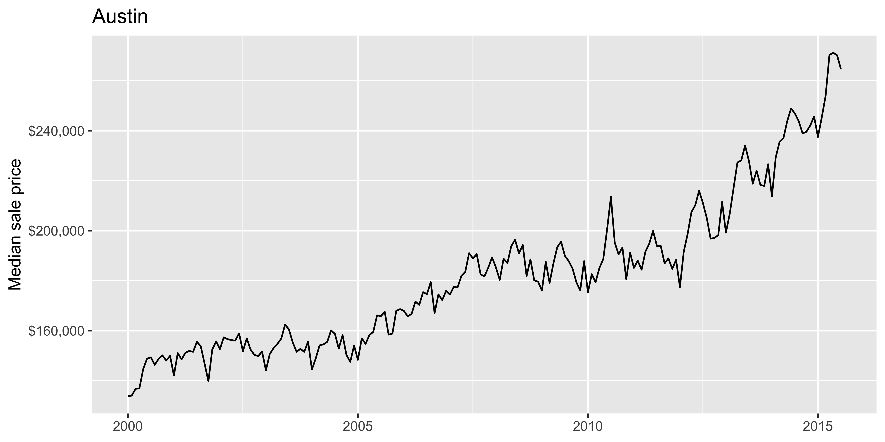
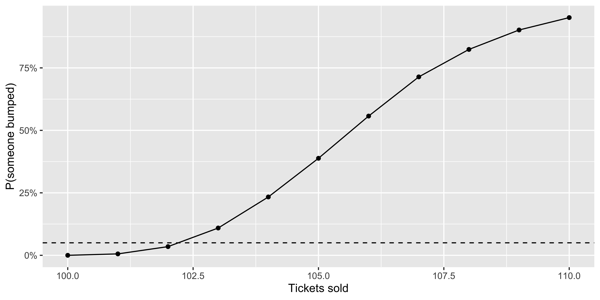
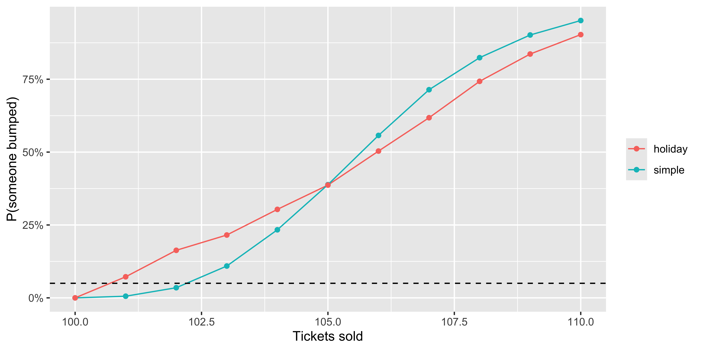
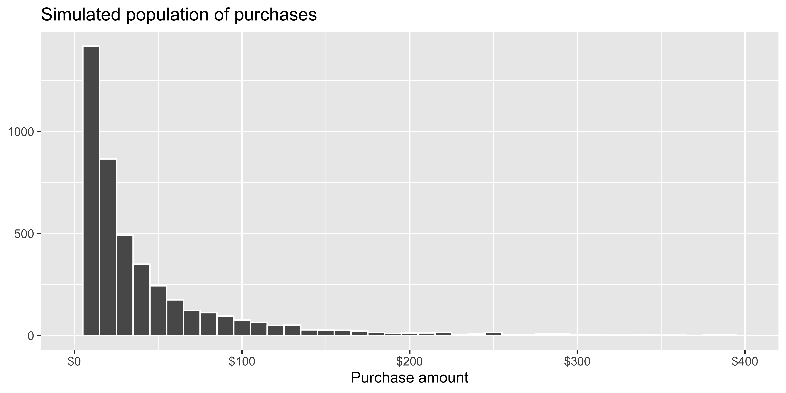
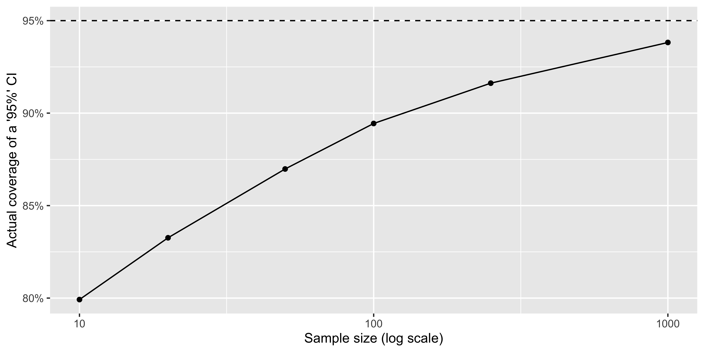
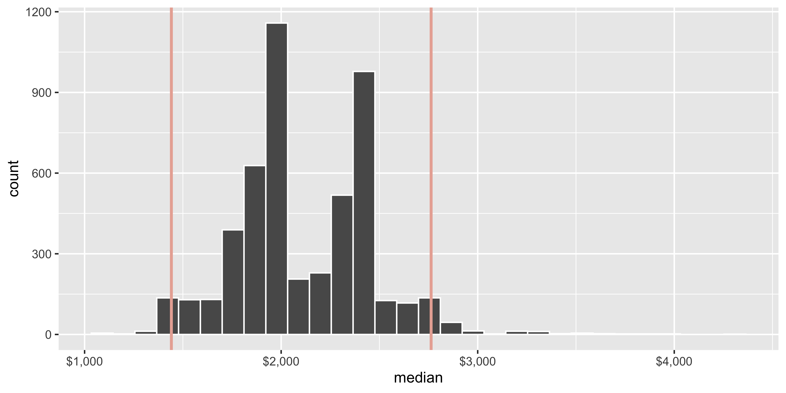

STAT 7500
Your manager wants monthly sales, dollar volume, and median price for Texas cities, standardized so they can share one chart.
This code runs without an error or warning. Is it correct?
Rule of thumb: once you have copied a block of code twice, write a function.
| Repeat… | Tool | Example |
|---|---|---|
| The same steps on new inputs | Functions | Standardize any column |
| The same function over many things | Iteration | Read 12 monthly files |
| A random process many times | Simulation | How often is a flight overbooked? |
We will also use sampling, the random building block, and finish with a short look at the bootstrap.
standardize. Use a verb that says what it does.x. These are the inputs that change from use to use.{ }.[1] -1.2649111 -0.6324555 0.0000000 0.6324555 1.2649111[1] -0.8728716 -0.2182179 NA 1.0910895Before trusting a function on 8,000 rows, check it on 5 values you can verify by hand.
NA stay NA, without breaking the other values?mutate()# A tibble: 8,602 × 5
city date sales volume median
<chr> <dbl> <dbl> <dbl> <dbl>
1 Abilene 2000 -0.430 -0.414 -1.52
2 Abilene 2000. -0.407 -0.410 -1.86
3 Abilene 2000. -0.378 -0.398 -1.87
4 Abilene 2000. -0.407 -0.397 -1.59
5 Abilene 2000. -0.368 -0.393 -1.63
6 Abilene 2000. -0.354 -0.379 -1.64
# ℹ 8,596 more rowsLess code. More importantly, the formula is written once.
across() do the repeating# A tibble: 8,602 × 5
city date sales volume median
<chr> <dbl> <dbl> <dbl> <dbl>
1 Abilene 2000 -0.430 -0.414 -1.52
2 Abilene 2000. -0.407 -0.410 -1.86
3 Abilene 2000. -0.378 -0.398 -1.87
4 Abilene 2000. -0.407 -0.397 -1.59
5 Abilene 2000. -0.368 -0.393 -1.63
6 Abilene 2000. -0.354 -0.379 -1.64
# ℹ 8,596 more rowsacross() applies one function to many columns.
Austin and Abilene have very different markets. How would you standardize within each city instead?
Flag unusual values with the 1.5 × IQR rule (the boxplot rule):
is_outlier() returns TRUE/FALSE, so it works anywhere a condition does.
# A tibble: 5 × 2
cut n
<ord> <int>
1 Fair 4
2 Good 13
3 Very Good 27
4 Premium 38
5 Ideal 38A reusable rule makes it easy to apply the same definition of “unusual” in every report.
Remember number_of_cats, stored as character? Make your function refuse bad input.
Error in `standardize()`:
! `x` must be numeric, not character.A clear error now is better than a quiet NA three steps later.
Suppose you often compute a grouped mean. A first attempt:
Error in `group_by()`:
! Must group by variables found in `.data`.
✖ Column `group_var` is not found.group_by() looks for a column literally named group_var.
{{ }}Wrapping an argument in {{ }} tells tidyverse functions to use the column the user supplied.
# A tibble: 7 × 3
class mean n
<chr> <dbl> <int>
1 2seater 24.8 5
2 compact 28.3 47
3 midsize 27.3 41
4 minivan 22.4 11
5 pickup 16.9 33
6 subcompact 28.1 35
# ℹ 1 more rowKeep functions small: one job, a clear name, and tested on a tiny example.
5 minutes · Practice 1 in the companion document
Write prop_missing(x) that returns the proportion of values in x that are NA.
Test it on c(1, NA, 3, NA). What should you get?
Use it with summarise(across(everything(), prop_missing)) on txhousing.
Which variables would you ask questions about before you analyzed them? What would you ask the person who sent you the data?
Bonus: add a digits argument, defaulting to 2, that rounds the result.
[1] 0.5# A tibble: 9 × 2
variable prop_missing
<chr> <dbl>
1 city 0
2 year 0
3 month 0
4 sales 0.07
5 volume 0.07
6 median 0.07
# ℹ 3 more rows| You wrote | R repeated it over |
|---|---|
mutate(across(c(sales, volume), standardize)) |
columns |
group_by(city) |> summarise(...) |
groups |
Some jobs don’t fit inside a data frame:
A partner sends a new CSV every year, with the same columns each time.
[1] "data/tx-housing/txhousing_2012.csv"
[2] "data/tx-housing/txhousing_2013.csv"
[3] "data/tx-housing/txhousing_2014.csv"
[4] "data/tx-housing/txhousing_2015.csv"Rows: 552
Columns: 9
$ city <chr> "Abilene", "Abilene", "Abilene", "Abilene", "…
$ year <dbl> 2012, 2012, 2012, 2012, 2012, 2012, 2012, 201…
$ month <dbl> 1, 2, 3, 4, 5, 6, 7, 8, 9, 10, 11, 12, 1, 2, …
$ sales <dbl> 95, 142, 172, 170, 211, 188, 183, 220, 146, 1…
$ volume <dbl> 11371474, 16905161, 20922281, 20909533, 28521…
$ median <dbl> 105600, 102000, 112000, 104400, 111600, 12000…
$ listings <dbl> 703, 720, 723, 722, 1125, 1176, 1176, 1132, 1…
$ inventory <dbl> 4.8, 4.8, 4.7, 4.6, 7.1, 7.5, 7.5, 7.1, 6.8, …
$ date <dbl> 2012.000, 2012.083, 2012.167, 2012.250, 2012.…for loop[1] 4Every loop needs three things: an output container, a sequence to step through, and a body to run each time.
# A tibble: 1,978 × 9
city year month sales volume median listings inventory date
<chr> <dbl> <dbl> <dbl> <dbl> <dbl> <dbl> <dbl> <dbl>
1 Abile… 2012 1 95 1.14e7 105600 703 4.8 2012
2 Abile… 2012 2 142 1.69e7 102000 720 4.8 2012.
3 Abile… 2012 3 172 2.09e7 112000 723 4.7 2012.
4 Abile… 2012 4 170 2.09e7 104400 722 4.6 2012.
5 Abile… 2012 5 211 2.85e7 111600 1125 7.1 2012.
6 Abile… 2012 6 188 2.56e7 120000 1176 7.5 2012.
# ℹ 1,972 more rows# A tibble: 4 × 2
year n
<dbl> <int>
1 2012 552
2 2013 552
3 2014 552
4 2015 322map(): the loop, packagedThe purrr package (part of the tidyverse) replaces the loop bookkeeping with one function:
map(.x, .f) applies .f to each element of .x and returns a list:
No container to set up and no index i to keep track of.
# A tibble: 4 × 2
year n
<dbl> <int>
1 2012 552
2 2013 552
3 2014 552
4 2015 322When the 2016 file arrives, this code doesn’t change: list.files() picks it up automatically.
For CSVs with the same columns, readr can read and stack them in one step:
The map() pattern works for anything. For example, every sheet in an Excel workbook:
\(x)When a function is only needed once, write it in place:
\(x) x^2 is shorthand for function(x) x^2.\(s) read_excel(path, sheet = s).map variants return vectors displ cty hwy
3.471795 16.858974 23.440171 [1] "txhousing_2012.csv" "txhousing_2013.csv"
[3] "txhousing_2014.csv" "txhousing_2015.csv"| Function | Returns |
|---|---|
map() |
a list |
map_dbl(), map_int(), map_chr(), map_lgl() |
a vector of that type |
Older course materials and many colleagues use the apply family. They do the same jobs.
| Job | purrr | base R |
|---|---|---|
| Apply to each element, get a list | map(x, f) |
lapply(x, f) |
| Apply to each element, get a vector | map_dbl(x, f) |
sapply(x, f) |
| Apply to each row or column of a matrix | — | apply(m, 1 or 2, f) |
Repeat a random expression n times |
map(1:n, \(i) ...) |
replicate(n, expr) |
We will use replicate() for simulation; it is short and clear.
First, a function that makes one plot:

cities <- c("Austin", "Dallas", "Houston", "San Antonio")
walk(cities, # for each city in cities...
\(city) ggsave( # ...given one city name, save a plot:
filename = paste0("img/median-price-", city, ".png"), # e.g. "img/median-price-Austin.png"
plot = city_plot(city), # the plot for that city
width = 6, height = 4 # size in inches
))walk() is map() for side effects: we want the files, not a returned value.8 minutes · Practice 2 in the companion document
A partner sends a CSV of Texas housing data every year. You have 2011–2014.
read_csv(), then stack them with bind_rows().map() in one pipeline. Do you get the same counts?Copy-paste: one line per file
sample() for vectors[1] "Cal" "Dee"[1] "Ben" "Dee" "Ana" "Cal" "Eli" "Fay" [1] 3 2 2 6 2 3 5 1 4 4Default is without replacement. Use replace = TRUE when the same value can be drawn again.
Use prob = when outcomes are not equally likely:
[1] "bronze" "bronze" "silver" "silver" "bronze" "bronze"
[7] "bronze" "silver" "bronze" "bronze" "gold" "silver"Useful for building realistic fake data: for example, 60% of customers are bronze-tier.
set.seed()slice_sample() for data frames# A tibble: 5 × 10
carat cut color clarity depth table price x y z
<dbl> <ord> <ord> <ord> <dbl> <dbl> <int> <dbl> <dbl> <dbl>
1 0.4 Premium D VS2 61.7 59 1050 4.75 4.72 2.92
2 0.7 Premium H VS1 60.2 56 2435 5.78 5.71 3.46
3 1.2 Very G… J VS2 59.9 60 5140 6.98 6.95 4.17
4 1.01 Good G VS1 63.8 56 6283 6.27 6.34 4.02
5 1.5 Premium I SI1 62.3 58 6888 7.33 7.22 4.53Use n = for a number of rows or prop = for a fraction of rows.
A simple random sample may include very few rows from small groups. Sample within groups to guarantee each is represented:
200 customers; half get a new email design.
# A tibble: 2 × 2
group n
<chr> <int>
1 control 100
2 new_email 100rep() builds 100 of each label, and sample() shuffles them. This gives exactly equal groups. What would sample(c("control", "new_email"), 200, replace = TRUE) give?
train test
187 47 anti_join() from our joins week keeps the rows not chosen for training.
5 minutes · Practice 3 in the companion document
Using diamonds:
price to the full data.color. Verify with count().| Prefix | Gives you | Workplace question |
|---|---|---|
p |
P(X ≤ x) | “What fraction of deliveries take over 4.5 days?” |
q |
the value with a given probability below it | “What delivery time can we promise 95% of customers?” |
d |
density, or P(X = x) for counts | “What’s the chance of exactly 2 no-shows?” |
r |
random draws | “Give me 1,000 fake delivery times” |
Suffixes: norm, binom, pois, unif, exp, t, …
Delivery times are roughly Normal with mean 3 days and SD 0.8 days.
[1] 0.03039636[1] 4.315883[1] 2.633333 3.001733 2.080919 3.018750 3.457937[1] 0.1329533[1] 0.03741649Watch the boundary: lower.tail = FALSE gives P(X > x), so “4 or more” uses 3.
# A tibble: 500 × 5
id region age visits bought
<int> <chr> <dbl> <int> <int>
1 1 North 42 6 0
2 2 East 30 5 0
3 3 South 49 3 0
4 4 South 31 3 0
5 5 East 28 1 1
6 6 East 48 5 0
# ℹ 494 more rowsWhat about fake_survey is unrealistic? (Hint: look at age.)
Sometimes the math is hard, or its assumptions don’t match reality. Instead:
replicate() or map()This uses all three ideas from today: functions, sampling, and iteration.
A flight has 100 seats. Historically 95% of ticketed passengers show up. The airline sells 105 tickets. How often does someone get bumped?

set.seed(7500)
tibble(tickets = 100:110) |>
mutate(p_bump = map_dbl(tickets,
\(t) mean(replicate(10000, one_flight(tickets = t))))) |>
ggplot(aes(x = tickets, y = p_bump)) +
geom_line() +
geom_point() +
geom_hline(yintercept = 0.05, linetype = "dashed") +
scale_y_continuous(labels = label_percent()) +
labs(x = "Tickets sold", y = "P(someone bumped)")On holiday flights (20% of flights), nearly everyone shows up. On other flights, fewer do. The average show rate is still 95%.
Two new lines. The rest of the workflow is unchanged.

set.seed(7500)
tibble(tickets = 100:110) |>
mutate(
simple = map_dbl(tickets, \(t) mean(replicate(10000, one_flight(t)))),
holiday = map_dbl(tickets, \(t) mean(replicate(10000, one_flight_v2(t))))
) |>
pivot_longer(-tickets, names_to = "model", values_to = "p_bump") |>
ggplot(aes(x = tickets, y = p_bump, color = model)) +
geom_line() +
geom_point() +
geom_hline(yintercept = 0.05, linetype = "dashed") +
scale_y_continuous(labels = label_percent()) +
labs(x = "Tickets sold", y = "P(someone bumped)", color = NULL)Customer purchase amounts are right-skewed: most are small and a few are large. You have n = 20 purchases and report t.test(x)$conf.int.

Does a “95%” interval really capture the true mean 95% of the time?
true_mean <- exp(3 + 1.2^2 / 2) # mean of this lognormal population
ci_covers <- function(n) {
x <- rlnorm(n, meanlog = 3, sdlog = 1.2) # one sample of size n
ci <- t.test(x)$conf.int # the method we'd use
ci[1] <= true_mean & true_mean <= ci[2] # did it work?
}
set.seed(7500)
mean(replicate(10000, ci_covers(n = 20)))[1] 0.8338
set.seed(7500)
tibble(n = c(10, 20, 50, 100, 250, 1000)) |>
mutate(coverage = map_dbl(n, \(size) mean(replicate(5000, ci_covers(size))))) |>
ggplot(aes(x = n, y = coverage)) +
geom_line() +
geom_point() +
geom_hline(yintercept = 0.95, linetype = "dashed") +
scale_x_log10() +
scale_y_continuous(labels = label_percent()) +
labs(x = "Sample size (log scale)", y = "Actual coverage of a '95%' CI")8 minutes · Practice 4 in the companion document
A coffee shop sells an average of 40 muffins a day. Daily demand is Poisson. They bake a fixed number each morning.
sold_out(baked) that simulates one day and returns TRUE if demand exceeds baked.ppois().map_dbl() to estimate P(sell out) for baking 40–55. What is the smallest batch that sells out on at most 5% of days? Plot it.Bonus: Saturdays (1 day in 7) average 60. Update your function. Does the answer change?
[1] 0.1879[1] 0.1903499You audited a random sample of 150 sales and need to report the median price, with a margin of error.
t.test() gives intervals for means, assuming the conditions hold.Bootstrap idea: your sample is the best picture of the population you have. Resample from it, with replacement, recompute the statistic, and repeat. The spread of those results estimates the sampling variability.
2.5% 97.5%
1441.5 2763.0 Same recipe as before: a function for one resample, repeated, then summarized.

Here we have the full diamonds data. Does the interval capture median(diamonds$price)?
Change one line to bootstrap a different statistic:
Cautions
4 minutes · Practice 5 in the companion document
Using audit:
price.| Situation | Reach for |
|---|---|
| Same calculation on several columns | a function + across() |
| Same summary for each group | group_by() + summarise() |
| Many files, sheets, or plots | map(), list_rbind(), walk() |
| Choose rows at random | slice_sample() + set.seed() |
| Probability under a standard model | p/q/d functions |
| Probability under a messy model | simulate: function + replicate() |
| Uncertainty with no formula | bootstrap |